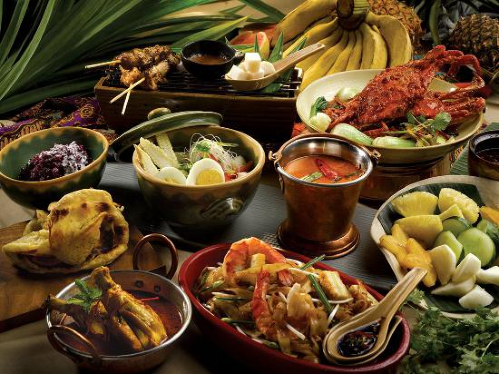

About Us
Selamat Datang di Kulinesia
Kuliner Khas Indonesia - Indonesia tak hanya terkenal sebagai negara yang kaya akan sumber daya alam tapi juga tradisi serta budaya yang sangat beragam. Salah satu produk budaya yang berhasil mencuri perhatian masyarakat dunia adalah kuliner khas Indonesia.
Karena cita rasa makanan khas Indonesia yang otentik, beberapa makanan asli negeri kita cukup sering disajikan di festival-festival yang diselenggarakan di beberapa negara di dunia. Penasaran apa saja makanan khas Indonesia
yang mendunia? Berikut beberapa daftar kuliner khas Indonesia yang mendunia dan cocok menjadi referensi santapan ketika berlibur..
